theme: gaia paginate: true marp: true author: Pere Antoni Martorell backgroundColor: white title: STLCutters.jl backgroundPosition: center footer: P. A. Martorell | STLCutters.jl | 01-08-2024 style: | .columns { display: grid; grid-template-columns: repeat(2, minmax(0, 1fr)); gap: 1rem; } .image-row { display: flex; justify-content: space-between; /* this will add equal space between each image */ } .outline { padding-top:50px; padding-left:100px; font-size:40px; }
<style> section { padding-top: 10px; } </style>
<!– _paginate: skip–> <!– _footer: "" –> <!– _backgroundColor: #f2f4f4 –>
<div style="text-align:center;padding-top:70px">
STLCutters.jl
Pere Antoni Martorell
1 Aug 2024
</div>
<div style="position:absolute;top:150px;left:25px"> <img src="figures/arctriomphelasticity.png" height=350> </div>
<div style="position:absolute;top:100px;right:25px"> <img src="figures/arctrimphlic_flow.png" height=400> </div>
<div style="position:relative;bottom:-250px;width:1000px;left:70px;background-color:white">
<div class="image-row">
<img src="logos/cimne-so.png" alt="CIMNE" height=70 >
<img src="logos/upc-complet.png" alt="UPC" height=80>
<img src="logos/Monash-logo.png" alt="UPC" height=80>
<img src="logos/gridap.png" alt="Gridap" height=80>
</div> </div>
<!– backgroundColor: white –> <!– _backgroundColor: white –>
Outline
<div class="outline">
- Why STLCutters.jl
- What is STLCutters.jl
- How to use and contribute
- Future Work
- Hands-on & Questions
</div>
Outline
<div class="outline">
- Why STLCutters.jl
- What is STLCutters.jl
- How to use and contribute
- Future Work
- Hands-on & Questions
</div>
Unfitted Finite Elements
<div style="text-align:center">
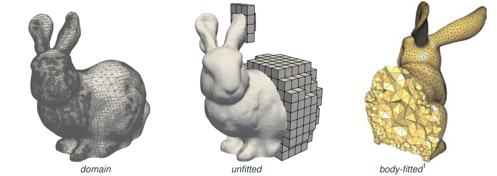
</div>
Unfitted Geometries
<div style="text-align:center;vertical-align:center">
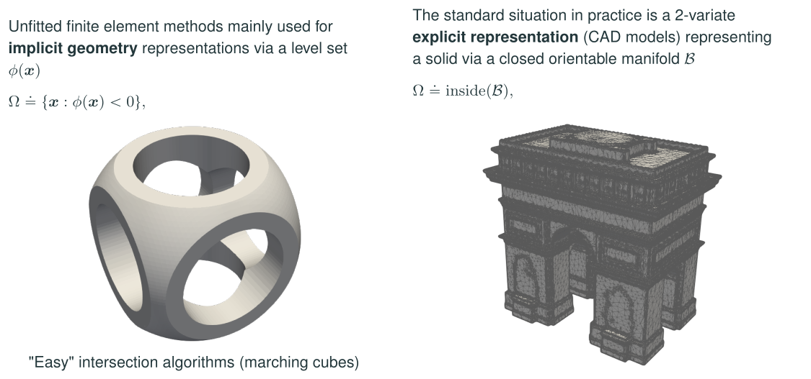
</div>
<div style="font-size:15px">
S. Badia, P. A. Martorell, F. Verdugo. Geometrical discretisations for unfitted finite elements on explicit boundary representations. J. Comput. Phys. 460 (2022): 111162.
</div>
Long term goals
<div style="border: 10px solid #b7950b;border-radius: 20px; ;padding-left:50px;padding-top:0px;padding-bottom:0px;font-size:25px;background-color:#fcf3cf">
Fluid-structure interaction (FSI) on unfitted FEM
- Discretizations for real STL and CAD geometries
- FSI solvers for unfitted FE
- Large-scale computations
</div>
My PhD Thesis:
<div class="columns" style="font-size:25px"> <div>
✅ Discretization on STL geometries ✅ High-order discretizations for CAD geometries (private repo) ✅ Space-time transient unfitted FE (private repo) ✅ Distributed memory parallelism
</div> <div>
❌ Fluid-structure interaction (FSI) and multiphysics ❌ Adaptive mesh refinement (AMR) ❌ Large-scale computations
</div> </div>
<!– TODO: focus on FSI and large-scale –>
Outline
<div class="outline">
- Why STLCutters.jl
- What is STLCutters.jl
- How to use and contribute
- Future Work
- Hands-on & Questions
</div>
Gridap and Julia
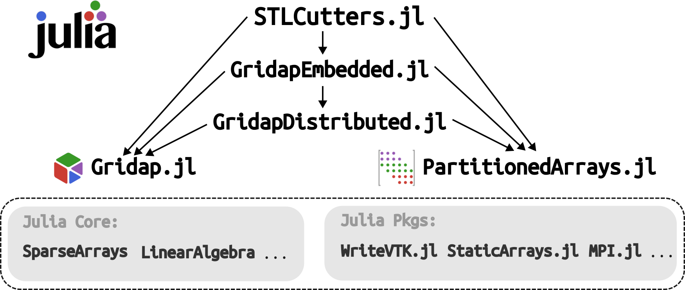
Cell-wise intersection
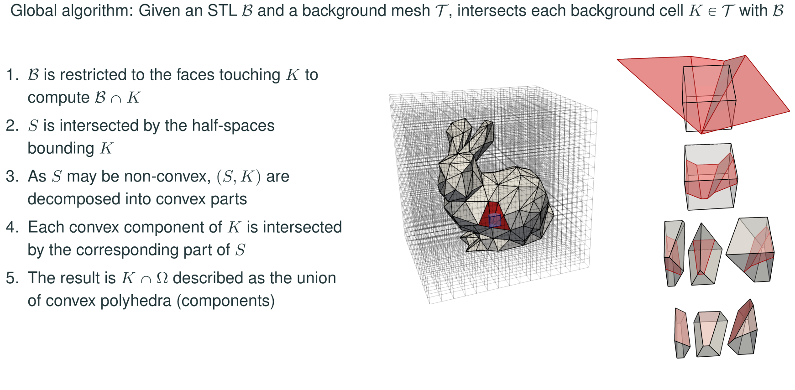
Achievements: Robustness
<small>
\[\epsilon _v = | V_\mathrm{in} + V_\mathrm{out} - V_\mathrm{box} | / V_\mathrm{box} < 10^{-10}\]
for 100% of 4726 STLs in Thingi10K
</small>
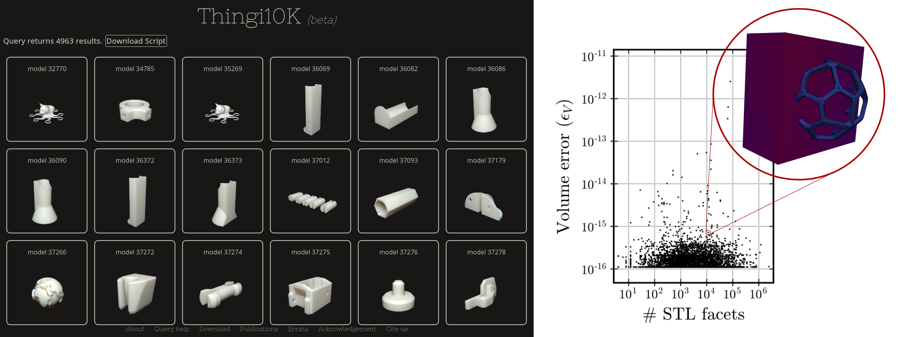
Achievements: Robustness
<div style="text-align:center">
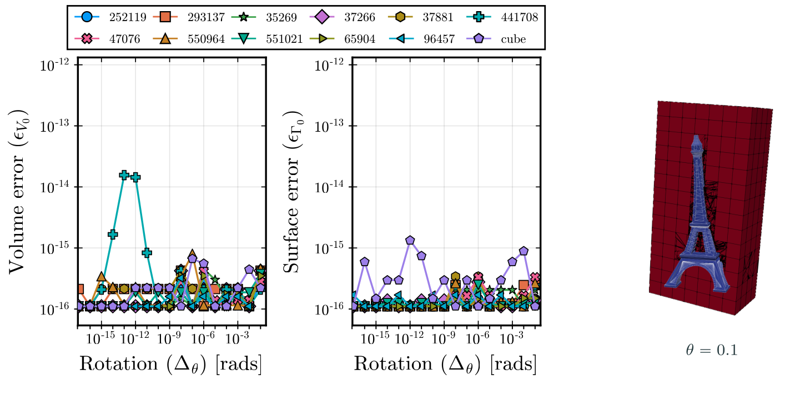
</div>
Achievements: Parallel Scalability
<div style="text-align:center">
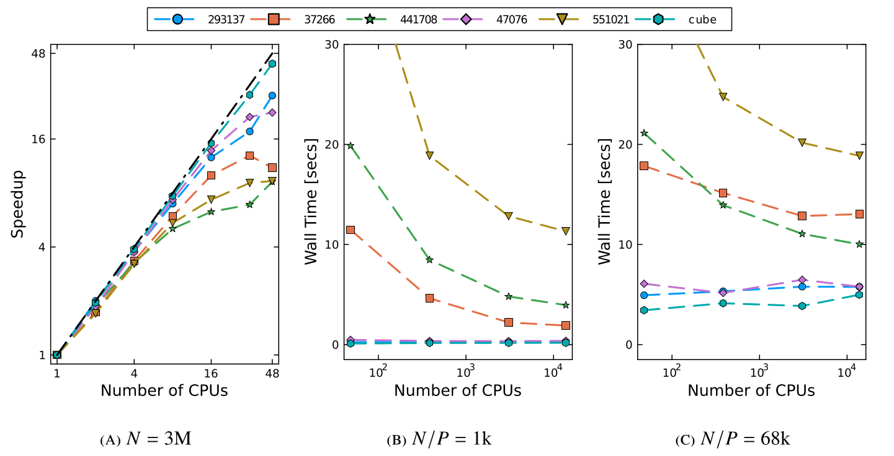
</div>
<div style="text-align:center; font-weight:bold "> <small> ⚠️ Unpublished results! </small> </div>
Outline
<div class="outline">
- Why STLCutters.jl
- What is STLCutters.jl
- How to use and contribute
- Future Work
- Hands-on & Questions
</div>
Using STLCutters.jl
<div class="columns"> <div>
- Install
] add STLCutters - Or download
git clone https://github.com/gridap/STLCutters.jl.gitGridap & GridapEmbedded API
GridapDistributed & GridapP4est compatibility
</div> <div>
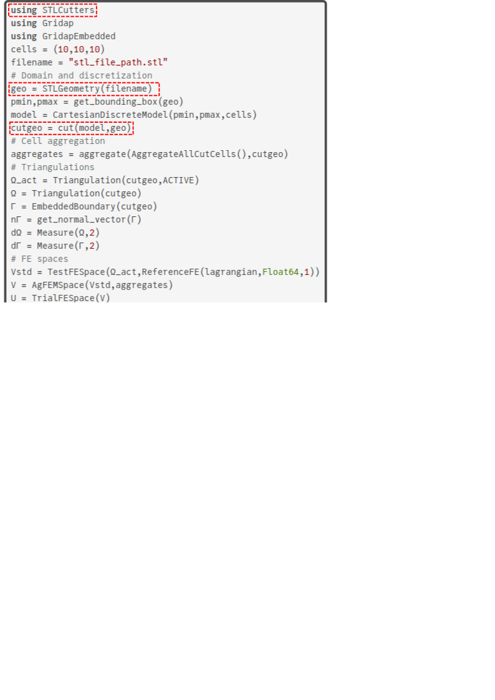
</div> </div>
Distributed usage
<div class="columns"> <div>
mpiexec -np 8 julia example.jl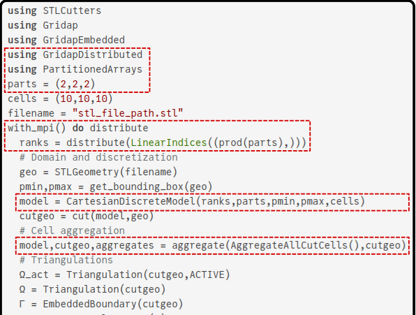
</div> <div>
] add GridapP4est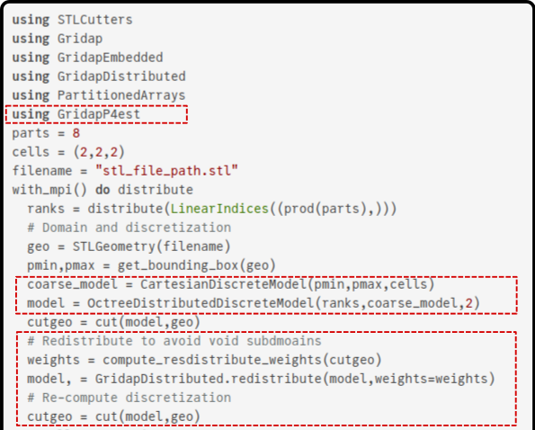
</div> </div>
Distributed usage
<div style="padding-top:70px">
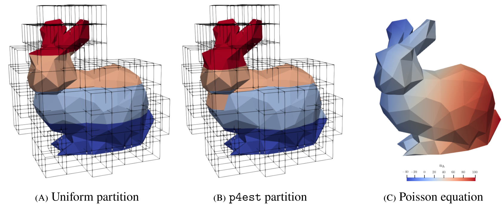
</div>
Adaptive Mesh Refinement (AMR)
<div class="columns"> <div>
2:1 $k$-balanced in p4est
flags = adapt_cut_cells(parts,cutgeo)
model, = Gridap.Adaptivity.adapt(model,flags)
cutgeo = cut(model,geo)</div> <div>
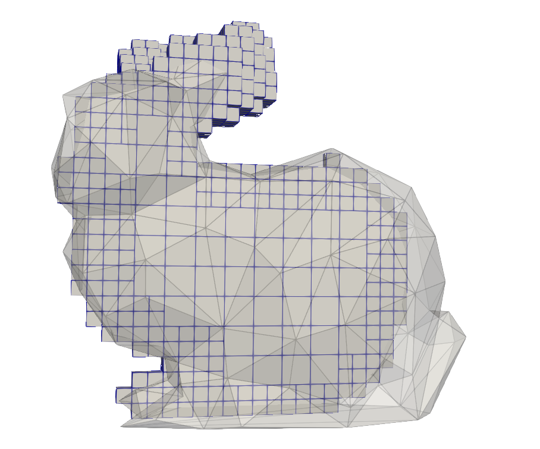
</div> </div>
Coding style
Gridap-like coding style
Semantic Versioning: Julia registry, registered dependencies
GitHub Utilities: Issues, PRs, CI
Documentation: docstrings, documentation pages
Code structure
<div style="vertical-align:center;padding-top:20px">
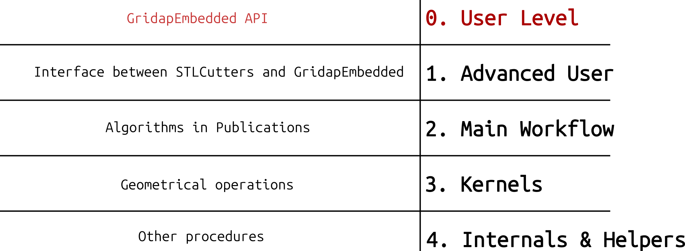
</div>
Code structure
<div style="vertical-align:center;padding-top:20px">
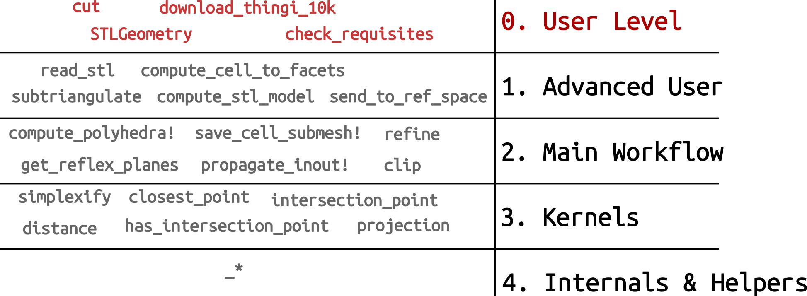
</div>
Package files
src/: 5k code lines ├── STLCutters.jl: Main module with imports and exports ├── SubTriangulations.jl: Core of the package with main algorithms ├── STLs.jl: Load, clean and manage STL geometries ├── Polyhedra.jl: General polytope operations ├── SimplexFaces.jl: Geometrical operations on simplicies ├── Embedded.jl: Extending GridapEmbedded API └── Distributed.jl: Extending distributed functions and algorithms
Core procedures
<div class="columns"> <div>
function subtriangulate(stl,bgmodel)
c_to_f = compute_cell_to_facets(bgmodel,stl)
submesh = _empty_submesh()
for cell in findall(!isempty,c_to_f)
Γ = stl[c_to_f[cell]]
P = compute_polyhedra(cell,bgmodel,Γ)
save_cell_submesh!(submesh,cell,P...)
end
propagate_inout!(submesh)
delete_small_cells(submesh)
grids = compute_grids(submesh)
labels = SubtriangulationLabels(submesh)
return grids,labels
end</div> <div>
function compute_polyhedra(cell,bgmodel,Γ)
K = Polyhedron(bgmodel,cell)
Γk = clip(Γ,planes(K))
Kin,Kout = refine(K,planes(Γk),reflex_planes(Γk))
return Kin,Kout,Γk
endfunction save_cell_submesh!(submesh,cell,Kin,Kout,Γk)
_submesh,_face_submesh = submesh
append!(_submesh,cell,simplexify(Kin),simplexify(Kout))
append!(_face_submesh,cell,simplexify(Γk))
end</div> </div>
ℹ️ Some functions have been simplified for demonstration purposes
Outline
<div class="outline">
- Why STLCutters.jl
- What is STLCutters.jl
- How to use and contribute
- Future Work
- Hands-on & Questions
</div>
Future Work
Extract mesh of general polytopes STLCutters.jl#37
Reduce memory allocations STLCutters.jl#38
Deal with disconnected subdomains STLCutters.jl
Distribute space-time methods STLCutters.jl
AMR with unfitted AgFEM GridapEmbedded.jl
Fix moment fitting in parallel GridapEmbedded.jl#94
Solve void subdomains GridapDistributed.jl
Test distributed solvers on unfitted FSI
Acknowledgments
Special acknowledgments:
- Supervisors: Santiago Badia & Francesc Verdugo
- Contributors: STLCutters & Gridap ecosystem
- Users
- You
Thanks for giving a star on GitHub
Hands-on & Questions
Visit the GitHub page: https://github.com/gridap/STLCutters.jl
Check the documentation: https://gridap.github.io/STLCutters.jl
Locally navigate the repository & run examples:
git clone https://github.com/gridap/STLCutters.jl.git
code STLCutters.jljulia> include("examples/LinearElasticity.jl")
julia> filename = "test/data/550964.stl"
julia> LinearElasticity.main(filename,n=50,force=(tand(5),0,-1),output="example4")